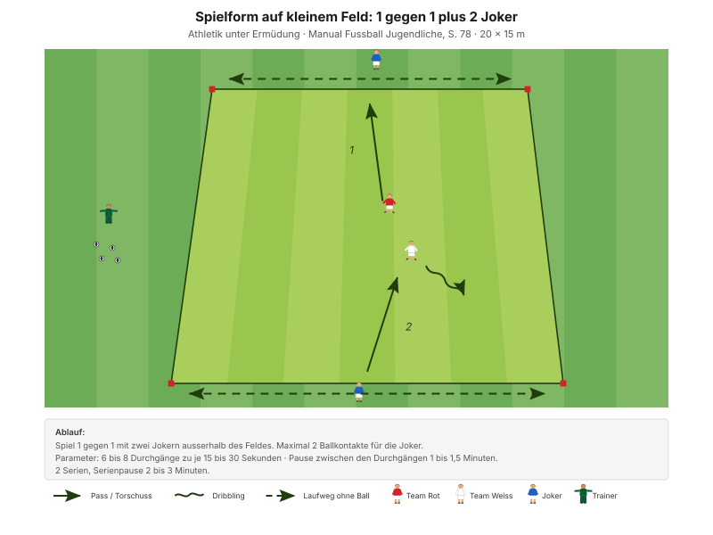
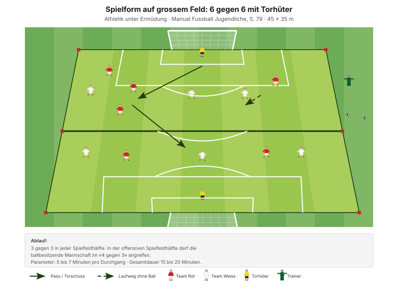

Ausdauer wird beim FCW nicht gelaufen, sondern gespielt. Das Manual ist an diesem Punkt eindeutig, und es hat recht: Runden um den Platz machen müde, aber nicht besser.
"Viele intensive Spielaktionen bis ans Spielende ausführen" Erscheinungsform A3, Manual Fussball Jugendliche, S. 72
Das Manual ordnet die Formen nach Feldgrösse (S. 77–79), weil die Grösse die Belastung steuert. Klein heisst kurz und maximal intensiv, gross heisst länger und spielnah. Dieses Training geht den Weg von klein nach gross – die Belastungsdauer steigt, die Intensität sinkt leicht.
| Zeit | Min | Teil | Inhalt |
|---|---|---|---|
| 0–4 | 4 | Besammlung | Thema ansagen, Gruppen einteilen |
| 4–16 | 12 | E1 | Ballzirkulation im Team · Big 4 zwischen den Wiederholungen |
| 16–22 | 6 | E2 | 2 Teams gegen 1 Team |
| 22–30 | 8 | E3 | Sprint mit und ohne Ball (Explosivität) |
| 30–45 | 15 | H1 | 1 gegen 1 plus 2 Joker · kleines Feld |
| 45–48 | 3 | Pause | Trinken, Umbau |
| 48–70 | 22 | H2 | Spiel in zwei Richtungen · mittelgrosses Feld |
| 70–82 | 12 | Abschluss | Freies Spiel 5 gegen 5 plus 2 Torhüter |
| 82–90 | 8 | Ausklang | Cool-down, zwei Entwicklungsfragen, Verabschiedung |
| Total | 90 |
Einstieg 26 · Hauptteil 37 · Abschluss 20 Min. – nach dem Trainingsschema des Manuals (S. 43).
Drei Feldgrössen, aber ineinander gelegt: Das kleine Feld für H1 liegt im mittleren für H2, dieses im grossen für den Abschluss. Es werden nur Teller weggenommen, nie neu gesteckt.
Eigene Skizze · Platzaufteilung
Nur einmal aufbauen – das Einstiegsfeld liegt im späteren Spielfeld.
"Leg genügend Bälle bereit, damit keine Pausen entstehen." Manual Fussball Jugendliche, S. 77
12 Minuten · 30 × 25 m · 3 Teams à 4 · alle 12 Spieler
Eigene Skizze · Ballzirkulation im Team
3 Wiederholungen à 1'30''–2' – zwischen den Wiederholungen je zwei Präventionsübungen.
"Flache, scharfe Pässe" SFV-Lernbaustein "Einstieg TA: Spielsituation rasch erkennen und blitzschnell entscheiden", Phase 1
Je zwei Übungen zwischen den Wiederholungen, 25 Sekunden pro Übung:
| Bereich | Übung | Worauf achten |
|---|---|---|
| Fussgelenk | Einbeinsprünge vorwärts | Bei der Landung knickt das Knie nicht ein, Blick nach vorne. |
| Knie | Copenhagen | Schulter, Hüfte, Knie und Fussgelenk in einer Linie, unteres Bein gestreckt. |
| Hüfte | Brücke | Knie hüftbreit, Oberschenkel in einer Linie mit dem Körper. |
| Hamstrings | Brücke mit Fersengang | Becken hochhalten, damit Schulter, Hüfte und Knie eine Linie bilden. |
"Arbeit mit Zeitvorgaben – nicht mit Anzahl Wiederholungen." Prinzip Körperstabilität, Manual Fussball Jugendliche, S. 75
Zwei Punkte pro Übung nennen, nicht mehr. Qualität vor Tempo.
6 Minuten · gleiches Feld · 3 Wiederholungen à 1'30''–2'
"Jede Spielerin reagiert im Umschaltmoment blitzschnell" SFV-Lernbaustein "Einstieg TA: Spielsituation rasch erkennen und blitzschnell entscheiden", Phase 2
8 Minuten · 2 Bahnen · Paare bilden
| Parameter | Vorgabe |
|---|---|
| Distanz | 30+ m |
| Wiederholungen | 2 |
| Pause zwischen Wiederholungen | 1/20 |
| Serien | 2 |
| Pause zwischen Serien | 2'–3' |
"Erholungszeit: 10- bis 20-fache Dauer der Belastungszeit, abhängig von der Laufdistanz. Vollständig erholen zwischen den Wiederholungen." Prinzipien Explosivität, Manual Fussball Jugendliche, S. 72
Auch heute gilt die volle Pause. Der Explosivitätsteil bleibt Explosivität – die Ausdauerbelastung kommt erst im Hauptteil.
15 Minuten · 20 × 15 m · 3 Felder parallel
Manual-Vorlage · Diagramm 55 "1 gegen 1 plus 2 Joker" (S. 78)

Drei Felder à 4 Spieler – alle 12 sind gleichzeitig beteiligt.
| Parameter | Vorgabe |
|---|---|
| Durchgänge | 6 bis 8 |
| Dauer pro Durchgang | 15 bis 30 Sekunden |
| Pause zwischen den Durchgängen | 1 bis 1,5 Minuten |
| Serien | 2 |
| Serienpause | 2 bis 3 Minuten |
15 bis 30 Sekunden klingen nach nichts – im 1 gegen 1 auf 20 × 15 m sind sie brutal. Genau darum geht es: maximale Intensität, dann echte Erholung. Wer die Pause kürzt, macht aus der Form ein zähes Dauerspiel und verliert die Wirkung.
22 Minuten · 30 × 30 m · alle 12 Spieler
Manual-Vorlage · Diagramm 56 "Spiel in zwei Richtungen" (S. 78)

Vier Tore – der Trainer bestimmt, auf welche gespielt wird.
| Parameter | Vorgabe |
|---|---|
| Durchgänge | 4 bis 6 |
| Dauer pro Durchgang | 3 bis 5 Minuten |
| Passive Erholung zwischen den Durchgängen | 3 Minuten |
Der Richtungswechsel auf Zuruf ist genial einfach: Er zwingt das ganze Team, sich neu zu orientieren, ohne dass eine Pause entsteht. Die Belastung kommt aus dem Spiel selbst, nicht aus einer Laufvorgabe. Und weil die Torhüter bei den seitlichen Toren mitspielen, ist immer Bewegung im Feld.
12 Minuten · 45 × 35 m · alle 12 Spieler
Manual-Vorlage · Diagramm 58 "6 gegen 6 mit Torhütern" (S. 79)

Die spielnaheste Form des Abends – und der Abschluss.
Warum das ein guter Abschluss ist: Es ist ein richtiges Spiel, es macht Freude, und die Zonenregel sorgt dafür, dass niemand sich verstecken kann. Ausdauer wird hier trainiert, ohne dass es sich nach Training anfühlt.
8 Minuten · Cool-down im Gehen, dann Kreis in der Mitte
Zuerst 3–4 Minuten lockeres Auslaufen und Mobilität, dann der Kreis. Zwei Fragen – die Antworten kommen von den Spielern, nicht vom Trainer:
"Gelingt es dir, die Konzentration lange aufrecht zu erhalten? Was lenkt dich ab?"
"Hast du bis zum Schluss alles gegeben?" Entwicklungsfragen, Manual Fussball Jugendliche, S. 82 und 81
Material aufräumen – laut Teamregel Respekt Teamarbeit, nicht Strafe.
| Teil | Vorlage | Seite |
|---|---|---|
| E1 – E3 | SFV-Lernbaustein "Einstieg TA: Spielsituation rasch erkennen und blitzschnell entscheiden", Phasen 1–3 | – |
| H1 | Spielform auf kleinem Feld "1 gegen 1 plus 2 Joker" (Diagramm 55) | 78 |
| H2 | Spielform auf mittelgrossem Feld "Spiel in zwei Richtungen" (Diagramm 56) | 78 |
| Abschluss | Spielform auf grossem Feld "6 gegen 6 mit Torhütern" (Diagramm 58) | 79 |
| Ziele, Prinzipien, Coaching | Ermüdungsresistenz | 77 |
| Explosivität, Körperstabilität | Athletik und Gesundheit | 72, 75 |
| Trainingsaufbau | Trainingsschema (Abb. 19) | 43–45 |
Alle Seitenangaben beziehen sich auf das J+S Manual Fussball Jugendliche (BASPO/SFV, 2022). Spielerzahlen und Feldmasse sind auf einen Kader von 12 Spielern angepasst. Dieser Trainingsplan wurde mit Unterstützung von KI (Claude, Anthropic) erstellt.